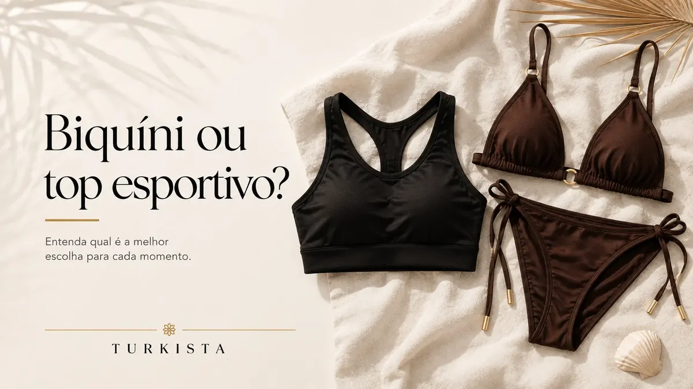
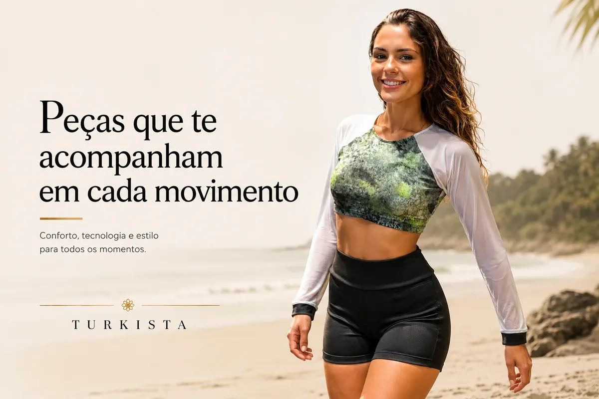
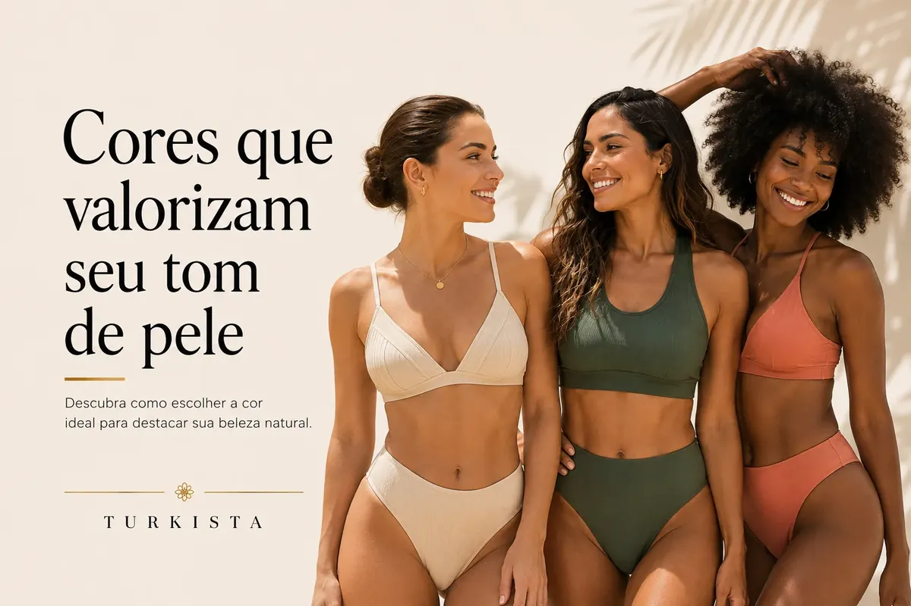

Blog
Revista Turkista
Conteúdo sobre moda praia, performance, tecidos e cuidados para te acompanhar sempre.

Como cuidar do seu biquíni e fazer durar muito mais
Dicas práticas para conservar a cor, a elasticidade e o caimento das peças.
Ler artigo
O tecido certo faz toda a diferença
Entenda por que escolhemos cada tecido para um tipo de movimento.
Ler artigo
Moda praia o ano inteiro: como usar além do verão
Peças versáteis que acompanham você em qualquer estação do ano.
Ler artigo
Biquíni ou top esportivo? Entenda as diferenças
Quando usar cada um e como escolher o ideal para o seu treino.
Ler artigo
Do ateliê à peça pronta: o cuidado em cada detalhe
Conheça cada etapa da nossa produção própria e o que nos torna únicas.
Ler artigo
Lavagem, secagem e armazenamento corretos
O passo a passo simples que evita que a lycra perca cor e sustentação.
Ler artigo
Fabricação própria: por que fazemos assim
Corte, costura e acabamento sob o mesmo teto — e o que isso muda na peça.
Ler artigo
Peças que te acompanham em cada movimento
Sustentação onde o corpo precisa, liberdade onde o treino pede.
Ler artigo
Cores que valorizam seu tom de pele
Um guia rápido para escolher a cor certa da próxima peça Turkista.
Ler artigo